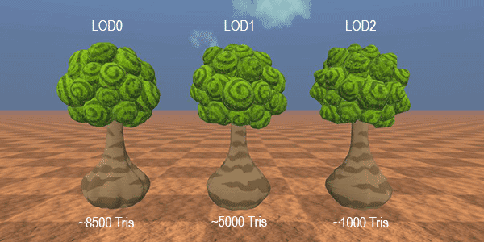
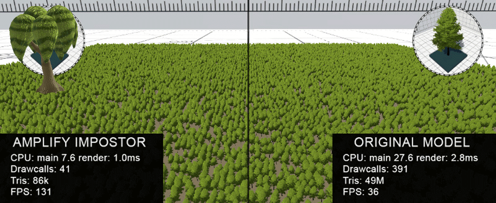
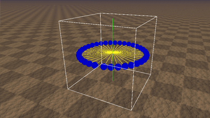
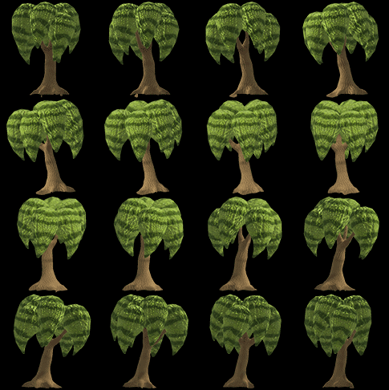

I was tasked with performance optimisation and rendering budget management for our Highstreet metaverse VR project. The project consists of diverse, otherworldly biomes and scenes, which makes the requirements more varied and therefore calls for dynamic solutions. To satisfy these requirements, I decided to enforce the use of LODs throughout the project for all mesh assets. For the most part, this kept performance in a playable range of 60–72 fps, but we soon noticed performance dropping rapidly once we designed and set up a forest environment with lots of vegetation and foliage. Performance fell to around 35–40 fps, and sometimes even to ~15 fps. That naturally raised concerns for me, and I started researching how to tackle the issue, because if we were already seeing this at this scale, rendering the scenes down the line would become almost impossible.

So I researched how to solve this newly faced challenge of rendering a large number of objects in a VR scene. I came across many suggestions, but most of them were things I had already implemented: LODs, optimised shaders, smaller scenes (not possible in our case, as our game is an MMO!) and imposters. I had suggested imposters once before, and the team quickly responded that they had already tried Amplify Impostors in VR, and it was not performing well and was giving them issues.

At this point, reducing the triangle count had become so crucial that there wasn't much I could do
except look for ways to do exactly that. That's where I began researching how to build an imposter system
myself. The concept is quite simple: render images of the mesh from multiple angles
and project them onto a quad. The method is extremely effective at reducing the poly count and produces a convincing result,
especially when viewed from a distance. Plus, in VR we see a much blurrier,
softer version of distant objects anyway, which works great for my case.
I started by making a capture tool that orbits the model, captures the mesh from multiple angles
and saves each view to a texture.

Once the capturing was working, I looked for ways to combine the views into one atlas texture. Combining was actually straightforward: generate an array of textures, then create a large texture whose side is the square root of the number of textures multiplied by the texture width, which gives you the size of the atlas. Then use a for loop to draw each render into the atlas texture.

Once combined, I passed the atlas into a shader I created that picks and displays the correct image from the atlas grid based on the viewing angle. The result looks like this:
Once I completed this phase, I went on to improve aspects such as blending the images from one
view to the next and making the imposters respond to directional light. I also had to extend
the capture system to render normals and albedo separately, so they can be combined in the shader
to maintain the illusion of directional lighting and surface curvature. The finished result can be seen in the
video posted below.
*I am not allowed to share more than this due to an NDA, as it was made for the company I work for.*
© 2026 Alwin Joshy